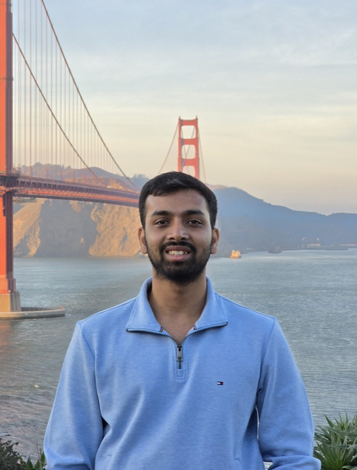

Jun 2026 – Sep 2026
Upstart — Machine Learning Engineer Intern
Remote, USA
Improving the accuracy, runtime, and cost of Upstart's personal-loan underwriting models.

MS Computer Science @ Stanford University · MLE Intern @ Upstart
LLM post-training · Reinforcement learning · Generative model evaluation
I'm a master's student in Computer Science at Stanford (GPA 3.95/4.0), where I work on post-training and evaluation of generative models — reward modeling for video generation, RL fine-tuning of LLMs, and building language models from scratch. My current research on automated video preference scoring is under review at NeurIPS 2026.
This summer I'm a machine learning engineering intern at Upstart, improving the accuracy, runtime, and cost of personal-loan underwriting models.
Before Stanford, I spent 2.5 years as a software engineer at Samsung Electronics HQ (Suwon, South Korea) working on touch input kernel drivers and on-device gesture recognition for flagship phones, and a year at fintech startup slice as AVP of Strategy & Operations. I did my B.Tech. in CS at IIT Kanpur, graduating with Distinction with a 9.94/10 GPA and the Academic Excellence Award in all four years.
Introduced Video Preference Score (VPS), a fully automated preference model that recreates large-scale Elo-based video-generation arenas without human raters. Trained on a newly collected dataset augmenting generated videos with retrieved real-world footage, VPS correlates highly with human consensus and generalizes zero-shot to unseen models and benchmarks. Used as a reward model with Flow-GRPO, it improves WAN-2.1's generation quality by +51 Elo.
Studied whether curriculum learning helps LLM post-training across SFT, IPO, and RLOO on arithmetic-reasoning tasks, using an exact difficulty signal computed via dynamic programming over ~490k prompts. Found adaptive (competence-based) curricula lift SFT by +7.1 pass@1 while offline objectives are largely order-invariant — and showed why RLOO's advantage collapses to zero under difficulty re-weighting.
Modeled the film industry as a heterogeneous graph — ~37k movies, ~163k people, ~400k edges, with BERT plot embeddings and Laplacian positional encodings — and trained R-GCN and HGT models for cast recommendation as link prediction (HGT AUC 0.76 vs 0.52 ALS baseline) and IMDb rating prediction as node regression (RMSE 0.81 vs 1.04 Node2Vec + XGBoost).
Implemented GPT-2 from scratch, then studied how far parameter-efficient fine-tuning can go: LoRA/DoRA on KQV+MLP recovers nearly all of full fine-tuning's paraphrase accuracy (0.882 vs 0.898) with ~7% of trainable parameters, and repetition-aware decoding was the single biggest win for sonnet generation (+6 chrF). Also completed CS 336 (Language Modeling from Scratch, Profs. Percy Liang & Tatsunori Hashimoto), building the full LLM training stack end-to-end.
Implemented core OS primitives in a teaching kernel: locks, fork/vfork,
mmap, and file-system read/write/lseek operations.
Remote, USA
Improving the accuracy, runtime, and cost of Upstart's personal-loan underwriting models.
Bengaluru, India
Suwon, South Korea
Suwon, South Korea
Proposed audio accessibility features for Android phones and verified their patentability, outlining control/data flow and technical constraints.
Seattle, WA · with Prof. Sreeram Kannan
Built a Rust-based blockchain application to empirically test research on increasing transaction throughput and reducing confirmation latency.
GPA: 3.95/4.0
GPA: 9.94/10 · Graduated with Distinction